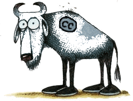
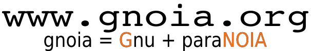

Somos um grupo formado por usuários e desenvolvedores de software livre com o objetivo comum de incentivar e disseminar, através de alternativas de software, a adoção de softwares livres no ambiente acadêmico.
É comum universidades adotarem um modelo de ensino baseado em softwares proprietários para cursos acadêmicos. O grupo acredita que a inserção do software livre nesse meio é mais que um avanço tecnológico, é um meio de racionar custos, direcionando verbas (muitas vezes escassas) para outras necessidades de uma universidade. O uso de software livre, principalmente em cursos de Ciência da Computação ou similares, desvincula o aluno de plataformas de desenvolvimento caras (onde muitas vezes se pratica a pirataria e proporciona a ele maior conhecimento sobre a operação de um computador.
O nome gnoia surgiu em uma das confraternizações realizadas pelos alunos de Ciência da Computação da Unioeste - Foz, através da junção das palavras: gnu e paranóia.
Aqui disponibilizamos nossos trabalhos de Ciência da Computação para que sejam estudados, modificados, utilizados para qualquer finalidade, e, preferencialmente, remetidos novamente ao site com as melhorias efetuadas.
irc.freenode.net #gnoia